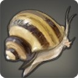

|
|
|
Ropefish |
| 32 Lakes | |
| As it has the tendency to coil up while inactive, this variety of freshwater eel is oft mistaken for lost boat rigging. |
As it has the tendency to coil up while inactive, this variety of freshwater eel is oft mistaken for lost boat rigging. Unlike most wavekin, the ropefish cannot survive underwater indefinitely, and must surface every several minutes to breathe. |
|
Ash Tuna |
| 32 Deep Sea |   |
| A large saltwater fish known to migrate between the Sea of Jade and the Sea of Ash. In recent years, overfishing by boats from the Far East has led to a significant drop in their numbers. |
A large saltwater fish known to migrate between the Sea of Jade and the Sea of Ash. In recent years, overfishing by boats from the Far East has led to a significant drop in their numbers. |
|
Grip Killifish |
| 32 Lakes S (1) | |
A rare type of fish oft found in stagnant waters such as the isolated pools which collect in the basin of Empty Heart on the western finger of the Gods' Grip.
[Suitable for display in aquariums tier 1 and higher.] |
A rare type of fish found in harsh environments, such as the stagnant rainwater ponds collecting in the basin of Empty Heart on the western finger of the Gods' Grip. |
 |
Bone Cleaner |
| 33 Lakes | |
| A freshwater snail that survives solely on the carrion of animals that get caught and perish in the sucking mud of swamps and marshes. |
A freshwater snail that survives solely on the carrion of animals that get caught and perish in the sucking mud of swamps and marshes. |
|
Root Skipper |
| 33 Lakes | |
| A small fish that is found only in Rootslake in the Black Shroud. |
A small fish that is found only in Rootslake in the Black Shroud. Similar to mudskippers, which can also survive outside of water, root skippers can be seen sunbathing and feeding on the exposed roots of the wood's giant sentinels. |
|
Leafy Seadragon |
| 33 Coastlines | |
| Though once found all across the five seas, seadragon numbers are now but a mere fraction of what they once were, due in part to Ishgardian culling parties. |
Though once found all across the five seas, seadragon numbers are now but a mere fraction of what they once were, due in part to Ishgardian culling parties. |
|
Bonytongue |
| 34 Lakes M (2) | |
A single flat tooth on the bottom of this freshwater species' mouth gives the bonytongue its name.
[Suitable for display in aquariums tier 2 and higher.] |
A single flat tooth on the bottom of this ancient freshwater species' mouth gives the bonytongue its name. Primitive drawings of this selfsame fish have been discovered in caves only recently unearthed. |
|
Fullmoon Sardine |
| 34 Coastlines M (2) | |
A tiny saltwater fish native to the waters of Vylbrand. Unlike other wavekin, they feed only at night, their activity increasing as Menphina waxes.
[Suitable for display in aquariums tier 2 and higher.] |
A tiny saltwater fish native to the waters of Vylbrand. Unlike other wavekin, they feed only at night, their activity increasing as Menphina waxes. |
|
Mitten Crab |
| 34 Rivers | |
| The claws of this freshwater crustacean are covered in myriad tiny bristles which provide the illusion that the crab is wearing mittens. |
The claws of this freshwater crustacean are covered in myriad tiny bristles which provide the illusion that the crab is wearing mittens. |
|
Haraldr Haddock |
| 34 Deep Sea | |
| A tasty saltwater fish indigenous to the cold waters of the Bloodbrine Sea. Its name comes from a legendary northern king who it was said would only eat the fatty flesh of this wavekin. |
A tasty saltwater fish indigenous to the cold waters of the Bloodbrine Sea. Its name comes from a legendary northern king who was said to have survived to the ripe old age of seven and fifty summers eating only the fatty flesh of this grotesque wavekin. |
|
Monke Onke |
| 33 Rivers | |
| A giant freshwater fish found in the tepid rivers and lakes of the Black Shroud. |
A giant freshwater fish found in the tepid rivers and lakes of the Black Shroud. Gridanian records state that the first monke onke was brought to the Black Shroud by the realm's first Lalafellin settlers, the name monke onke meaning “friendship” in the settlers' native tongue. |
|
Seema |
| 35 Rivers | |
| The flesh of this freshwater trout native to central and northern Eorzea is a bright pink, leading to the common nickname, “cherry trout.” |
The flesh of this freshwater trout native to central and northern Eorzea is a bright pink, leading to the common nickname, “cherry trout.” Seema are frightened by even the slightest change in water flow and temperature, making them extremely difficult to catch by those other than the most tenacious. |
|
Whitelip Oyster |
| 35 Coastlines |   |
| A bivalved mollusk found on the cliffs and rocks lining the Rhotano Sea. On rare occasions, sand will become trapped inside the shell and gradually form into a pearl. |
A bivalved mollusk found on the cliffs and rocks lining the Rhotano Sea. On rare occasions, sand will become trapped inside the shell and gradually form into a pearl. Enterprising Ul'dahn merchants have attempted numerous times, to no avail, to create pearls by introducing foreign objects to young shells with the hopes of harvesting treasure later on. |
|
Sandfish |
| 35 Sands | |
| An amphibious fish capable of breathing on land. This trait has allowed it to adapt to life in the deserts of Thanalan. |
A tiny amphibious fish capable of breathing on land. This trait has allowed it to adapt to life in the deserts of Thanalan. |
|
Silverfish |
| 36 Lakes | |
| As are copperfish and goldfish, freshwater silverfish are prized amongst well-to-do Ul'dahns, and often kept as pets. |
As are copperfish and goldfish, freshwater silverfish are prized amongst well-to-do Ul'dahns, and often kept as pets. Two score summers of crossbreeding were required to produce scales this lustrous. |
|
Clown Loach |
| 36 Lakes M (2) | |
Bright patterns, similar to a clown's motley, cover this small freshwater fish from head to tail.
[Suitable for display in aquariums tier 2 and higher.] |
Bright patterns, similar to a clown's motley, cover this small freshwater fish from head to tail. |
|
Sand Bream |
| 36 Sands | |
| A tiny sand-dwelling fish which can spend its whole life out of the water. |
A tiny sand-dwelling fish which can spend its whole life out of the water, gathering the moisture it needs to survive from the trace amount of dew which seeps through the desert sands each dawn. Though given the name bream by those living in the desert, this fish actually has no similarities to the bream found in the sea, other than its size. |
|
Lavender Remora |
| 36 Deep Sea | |
| A violet-hued fish found in the warmer waters of Eorzea's southern seas. |
A violet-hued fish found in the warmer waters of Eorzea's southern seas. It will attach itself to sharks or whales using suction cups growing from its underbelly, and feed on the scraps left by its host. |
|
Armored Pleco |
| 37 Lakes | |
| The rock-hard scales of the armored pleco are thought to protect the wavekin from injury when being dashed about swift water rapids. |
The rock-hard scales of the armored pleco are thought to protect the wavekin from injury when being dashed about swift water rapids. It also prevents other predators from preying on it, allowing the fish to grow undisturbed, sometimes for decades. |
|
Giant Bass |
| 37 Lakes | |
| Significantly larger than a dark bass, landing a giant bass can prove quite the challenge for even the most seasoned angler. |
Significantly larger than a dark bass, landing a giant bass can prove quite the challenge for even the most seasoned angler. Not known to feed on smaller worms or lures, fishers seeking to add this trophy to their cases will first need to catch a suitable bait. |
|
Desert Catfish |
| 37 Sands | |
| A large variety of air-breathing catfish. Its near-frictionless scales allow it to “swim” through the desert as a normal fish would through the water. |
A large variety of air-breathing catfish. Its near-frictionless scales allow it to swim through the sand as a normal fish would through the water. As it traverses the sands, it will swallow a great deal of the stuff, filling the creature's belly and making it appear much larger than it actually is. |
|
Balloonfish |
| 37 Coastlines | |
| A saltwater fish covered in scores of sharp spines, discouraging would-be predators from dining on this otherwise defenseless fry. |
A saltwater fish covered in scores of sharp spines, discouraging would-be predators from dining on this otherwise defenseless fry. Some fishers will also call them “sea bombs,” though none have ever been known to self-destruct. |
|
Velodyna Carp |
| 38 Rivers | |
| This scarlet cousin to the maiden carp can most commonly be found in the Velodyna and Hathoeva rivers. |
This scarlet cousin to the maiden carp can most commonly be found in the Velodyna and Hathoeva rivers. A favorite amongst Wildwood and Duskwight Elezen─amazingly one of the few things the clans actually agree on. |
|
Spotted Puffer |
| 38 Rivers | |
| A cousin of the sea-dwelling balloonfish, spotted puffers are unique in that they can survive in the brackish waters of deltas and river mouths. |
A cousin of the sea-dwelling balloonfish, spotted puffers are unique in that they can survive in the brackish waters of deltas and river mouths. |
|
Dustfish |
| 38 Sands | |
| When threatened, this sand-dwelling fish will beat the ground with its fins, kicking up a cloud of dust and allowing it the opportunity to escape unscathed. |
When threatened, this sand-dwelling fish will beat the ground with its fins, kicking up a cloud of dust and allowing it the opportunity to escape unscathed. |
|